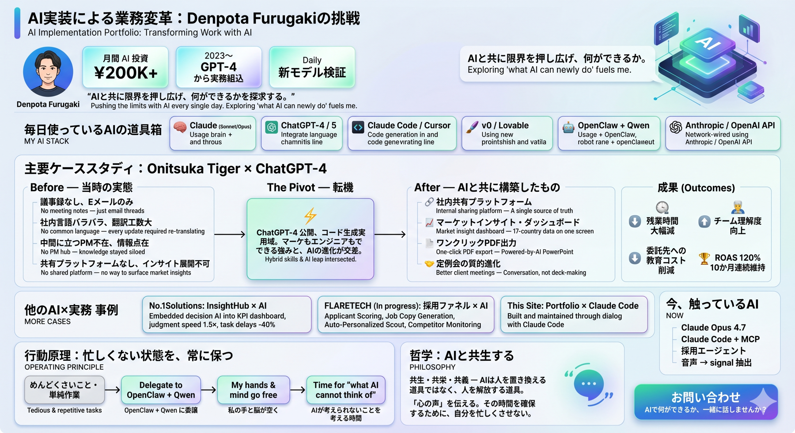

AIと共に、限界を毎日
押し広げている。
毎月20万円規模をAIに投資し、最新モデルを毎日業務に組み込む。「AIで何ができるか」を探求するのが、私の燃料です。
一目でわかるAI実装ポートフォリオ
このページの内容を1枚に凝縮したサマリー。共有・ダウンロードしてご活用ください。

{kind=link}
毎日使っているAIの道具箱
Claude (Sonnet 4.6 / Opus 4.7)
開発・戦略立案・長文ドキュメント分析の主軸
ChatGPT-4 / 5
ブレスト・コード生成・画像理解
Grok
リアルタイム情報・X連携の検証用
Claude Code
このサイトもこれで作った。CLI型コーディングエージェント
Cursor
エディタ統合型のAIペアプログラミング
Windsurf
Codeium製のエージェント統合IDE。文脈把握が強い
GitHub Copilot
補完速度重視。日々の細かい実装作業で活用
VS Code
AI拡張群を組み込んだベースエディタ
OpenClaw + Qwen
複数のバッチ処理を Qwen に並列委譲し、画面操作の時間を最小化
Manus
自律型エージェント。長時間タスクを丸ごと委譲する用途で検証中
v0 / Lovable
UIプロトタイピングを分単位で
Anthropic / OpenAI API
プロダクト組込・自社ツールにAIを直結
Onitsuka Tiger × ChatGPT-4
GPT-4公開直後、社内に存在しなかったプラットフォームをAIと共に構築。17か国の広告運用を一人で回せる仕組みに変えた。
Before — 当時の実態
-
議事録なし、Eメールスレッドだけ クライアントとのやりとりが流れて消える状態
-
社内共有の言語がバラバラ クライアントの状況を伝えるたび翻訳工数が発生
-
中間に立つPM不在 ハブ役がおらず、情報が点在
-
共有プラットフォームなし マーケットインサイトを社内に展開する手段がない
The Pivot — 転機
OpenAIが ChatGPT-4 を公開、コード生成能力が実用域へ。
「マーケもエンジニアもできる」自分の強みと、AIの進化がちょうど交差した瞬間。
After — AIと共に構築したもの
社内共有プラットフォーム
ChatGPT-4とペアを組んで実装。クライアント状況を全員が一元的に追える場所を新設。
マーケットインサイト・ダッシュボード
自分が見やすい形で17か国のデータを一画面に。気づきがすぐに次の打ち手に変換できるUIを設計。
ワンクリックPDF出力
以前は定例ごとにPowerPointを手作りしていた工数を、ボタン1つに圧縮。
定例会の質的進化
ダッシュボードを開いてクライアントへ即共有。資料作成ではなく対話に時間を使えるように。
他のAI×実務 事例
InsightHub × AI
KPIダッシュボードに意思決定支援AIを組み込み、判断速度を1.5倍に。タスク遅延を40%削減。
採用ファネル × AI
応募者のAIスコアリング、求人原稿のAB大量生成、スカウト文面の自動パーソナライズ、競合SES求人の自動モニタリング。
Portfolio × Claude Code
このポートフォリオサイト自体、Claude Codeとの対話で構築・運用されています。新機能はほぼリアルタイムで実装。
忙しくない状態を、常に保つ
めんどくさいことや単純作業はAIに委譲し、自分の手と脳は「AIが考えられないこと」のために空けておく。これが私の働き方の核です。
めんどくさいこと・単純作業
画面操作・繰り返し業務・調査作業
OpenClaw + Qwen に委譲
複数のバッチ処理を AI に並列で任せる
私の手と脳が空く
AIが考えられないことを考える時間
賢いのは、人間のおまけ。
本質は「心の声」を伝えること。
その時間を確保するために、自分を忙しくさせない。
それが私の働き方の指針です。
AIと共生する
「共生・共栄・共義」— AIは人を置き換える道具ではなく、人を解放する道具。
単純作業から人間を解放した先に、対話・創造・意思決定など「人にしかできない仕事」の時間が生まれる。私はその転換を、毎日の実装の中で起こし続けたい。
今、触っているAI
- Claude Opus 4.7 (1M context) — 数千行のコードを一度に読ませて設計判断
- Claude Code + MCP — Gmail / Calendar / Figma を直接操作するワークフロー検証
- 採用エージェント — 競合SES求人の自動収集・分析・差分レポート
- 音声 → signal 抽出 — 面談録音から候補者の通過確率を予測